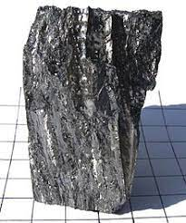

periyodik tablonun II-A grubunda yer alan toprak alkali grubundan element.
Berilyum ender elementlerdendir. Yerkabuğunda ancak %0,0006 oranında bulunur.
Zengin yatakları bulunmadığından, berilden elde edilir.
Fransız kimyacı Louis Nicolas Vauquelin tarafından 1798'de oksit halinde bulunmuş, 1828'de, birbirlerinden bağımsız olarak, Friedrich Wöhler ve Antoine Bussy tarafından elde edilmiştir.
Alüminyumdan daha hafif, ama daha sert, erime noktası da yüksek bir element olan berilyum, metalurjide kullanılır.
geri dön
